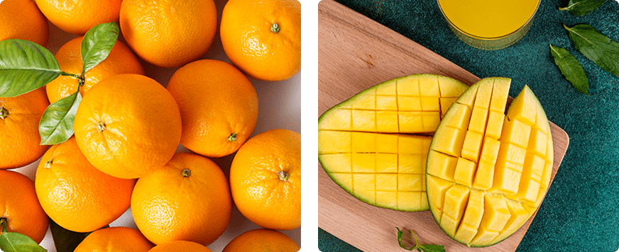

The Jar of Pebbles: A Guide to What Truly Matters
Imagine life as a jar. No, not for storing cookies or hiding your secret chocolate stash. This jar is symbolic, representing everything that makes up your life. Every day, we decide what to put into this jar — responsibilities, hobbies, relationships, and, of course,dreams.
But here's the catch — the jar isn’t infinite. You can’t just keep stuffing things in and hope it won’t overflow. Prioritizing what you put into your jar is the secret to a fulfilling and meaningful life.
So, how do you decide? Let’s break it down step-by-step, starting with the big stuff — the pebbles.
The Big Things: Pebbles
Pebbles symbolize the essential, non-negotiable aspects of life. These are the people, passions, and values that give life meaning and bring genuine happiness. Think of them as the sturdy rocks that form the foundation of your existence.
Examples of Pebbles
-
Family and Loved OnesLate-night heart-to-hearts, silly family traditions, and unconditional support.
-
HealthIt’s easier to chase dreams when you’re not chasing after your lost breath.
-
FriendshipsThe people who know your embarrassing stories and still choose to hang out with you.
-
Purpose and PassionsWhether it's creating, teaching, dancing, or gardening, passions keep your spirit alive.
Key Lesson: Without pebbles, your life may feel hollow, no matter how full your calendar looks.
The Important But Replaceable Things: Peas
Next up, we have the peas. Think of them as the second layer in your jar. Peas represent the practical, necessary things that make life comfortable. They matter, but they’re not the reason you jump out of bed in the morning.
Examples of Peas
-
Your JobIt pays the bills, funds your coffee obsession, and maybe even gets you a shiny toaster.
-
Money You need it, but it’s not the only thing that makes life good.
-
Your Phone Super useful, but you won’t look back and cherish the hours spent doom-scrolling.
Key Lesson: Peas are valuable but replaceable. Losing one might sting, but it won't leave your jar empty.
The Small Stuff: Sand
Now, the sneaky part — the sand. Sand represents all the minor distractions and pleasures that easily consume your time. They might feel important in the moment, but too much sand leaves no room for pebbles.
Examples of Sand
-
Scrolling Through Social Media"Just five more minutes" somehow turns into two hours of memes.
-
Binge-Watching TV Shows or serialsThat one episode cliffhanger? The ultimate test of willpower.
-
Mindless Online ShoppingSuddenly you own a glow-in-the-dark cat sweater. No regrets.
Key Lesson: Sand is fine in moderation. But if you fill your jar with it first, there won’t be space for what really matters.
The Beer Surprise
Just when it seems the jar is full, there’s always room for one last surprise. In this case, it’s beer. Yes, the wise professor from the original story topped off the jar with a cold beverage, proving a simple yet delightful point.
The Lesson of the Beer
- No Matter How Busy Life Gets, There’s Always Room for Fun.
- Moments with Friends Make Life Sweeter.
- Laughter and Relaxation Are Essential.
Key Lesson: Prioritizing joy makes everything else more bearable.
Finding Happiness: Family, Passion, and Purpose
Ultimately, a well-balanced jar leads to happiness. But what truly makes people happy? — It’s not endless social media scrolling.
Family, genuine connections, and meaningful work create lasting joy. Family dinners filled with laughter, children’s giggles, and shared traditions form memories that outshine fleeting pleasures.
Pursuing your passion, whether it’s art, teaching, or coding, brings purpose and satisfaction. And when you dedicate time to your passions, even the hardest days become rewarding.
Key Lesson: True happiness isn’t about avoiding the hard stuff. It’s about cherishing the pebbles that make life meaningful.
Why is homework so important?
- It Builds Discipline: Completing assignments teaches you to stay focused, meet deadlines, and solve problems — all vital skills in any career.
- It Enhances Knowledge: Each task strengthens your understanding of subjects, making you better prepared for real-world challenges.
- It Develops Critical Thinking: Homework often pushes you to think creatively and find solutions, a skill that employers value.
Example:
Maecenas lacinia felis nec placerat sollicitudin. Quisque placerat dolor at scelerisque imperdiet. Phasellus tristique felis dolor.
Maecenas elementum in risus sed condimentum. Duis convallis ante ac tempus maximus. Fusce malesuada sed velit ut dictum. Morbi faucibus vitae orci at euismod. Integer auctor augue in erat vehicula, quis fermentum ex finibus.
Mauris pretium elit a dui pulvinar, in ornare sapien euismod. Nullam interdum nisl ante, id feugiat quam euismod commodo. Sed ultrices lectus ut iaculis rhoncus. Aenean non dignissim justo, at fermentum turpis. Sed molestie, ligula ut molestie ultrices, tellus ligula viverra neque, malesuada consectetur diam sapien volutpat risus. Quisque eget tortor lobortis, facilisis metus eu, elementum est. Nunc sit amet erat quis ex convallis suscipit. ur ridiculus mus.
Key Lesson: The effort you put into homework today prepares you for the opportunities of tomorrow.
Life isn’t about cramming in as much as possible. It’s about choosing what fills your jar
wisely.
Start with your pebbles — your health, loved ones, and passions. Add the peas, the necessary but
replaceable things. Let the sand settle in, enjoying life’s small pleasures in moderation. And
remember the beer — laughter and connection will always find space.
So, what will you put in your jar today?